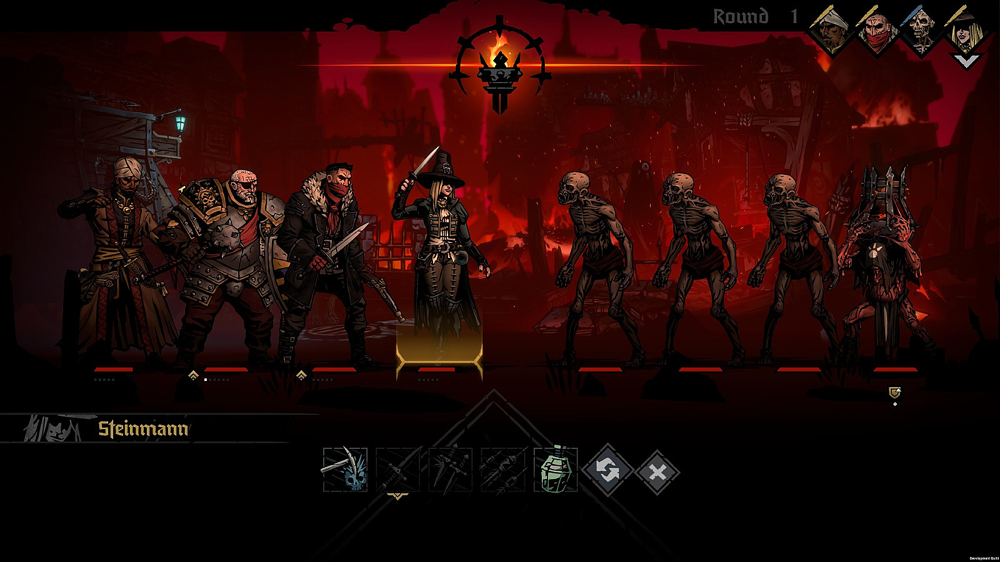
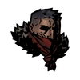
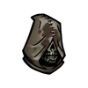

После 19 месяцев в раннем доступе Darkest Dungeon 2 наконец-то добралась до релиза. Darkest Dungeon 2 среди стримеров и ютуберов сильно нашумела. Ну, а игроки разделились на 2 лагеря. Кому то игра сильна понравилась, а кому то наооборот. Но графика стала в разы лучше! Так что же есть в Darkest Dungeon 2 ?

1. Стильная графика
2. 12 играбельных персонажей
3. 5 обширных глав
4. Потрясающие новые локации.
5. Более глубокие сражения, более темные враги.
Также у игры есть своя великолепная Википедия
